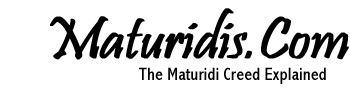

Wednesday, January 24 2018 - by Admin
Read more articles at Maturidis.Com


Related Articles:
- The Hanafi Maturidis are Followers of the Jahmiyyah and Mutazilah in Sifāt (Attributes)
//www.maturidis.com/maturidi/?jlytv
|  |
|
The Hanafi Maturidis are Followers of the Jahmiyyah and Mutazilah in Sifāt (Attributes) Wednesday, January 24 2018 - by Admin Read more articles at Maturidis.Com
Related Articles:
|